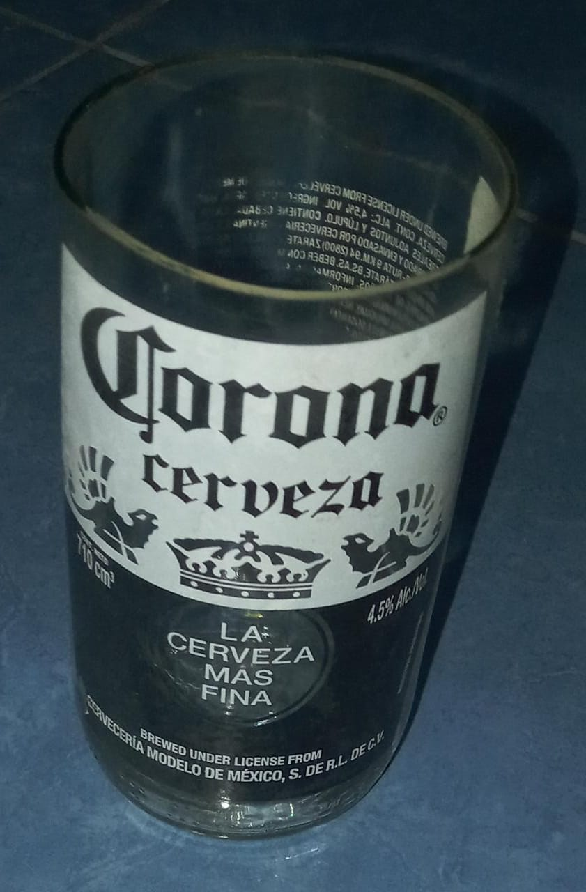
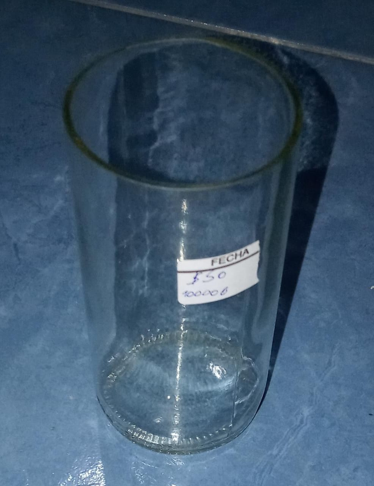

HAZ CLICK EN UNA IMAGEN PARA SABER SI ESE ARTICULO ESTA EN STOCK Y PARA HACER EL PEDIDO
- Vasos Verdes Grandes y Chicos

EN STOCK - Vasos de Corona Gandes y Chicos
 EN STOCK
- Vasos Transparentes Grandes y Chicos

EN STOCK - Vasos con Manija Grandes y Chicos
EN STOCK
PEDIDOS